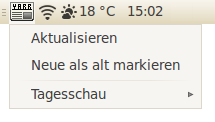

YARSSR
Dieser Artikel wurde für die folgenden Ubuntu-Versionen getestet:
Dieser Artikel ist mit keiner aktuell unterstützten Ubuntu-Version getestet! Bitte diesen Artikel testen und das getestet-Tag entsprechend anpassen.
Zum Verständnis dieses Artikels sind folgende Seiten hilfreich:
YARSSR  (Yet Another RSS Reader) ist ein schlanker und praxisbezogener Feedreader. Das Programm wurde in Perl geschrieben und beschränkt sich auf ein Symbol im Benachrichtigungsfeld des GNOME 2 Panels. Es ist genau das richtige für Benutzer, die einen separaten Feedreader ohne Schnick-Schnack suchen.
(Yet Another RSS Reader) ist ein schlanker und praxisbezogener Feedreader. Das Programm wurde in Perl geschrieben und beschränkt sich auf ein Symbol im Benachrichtigungsfeld des GNOME 2 Panels. Es ist genau das richtige für Benutzer, die einen separaten Feedreader ohne Schnick-Schnack suchen.
Das Programm enthält noch einige wenige nicht übersetzte Begriffe in Englisch. Dies ist für die praktische Nutzung aber nicht weiter relevant. Alternativen sind im Artikel Feedreader zu finden.

Installation¶
YARSSR kann über die Paketquellen installiert werden. Folgendes Paket müssen installiert [1] werden:
yarssr
 mit apturl
mit apturl
Paketliste zum Kopieren:
sudo apt-get install yarssr
sudo aptitude install yarssr
Nach erfolgreicher Installation ist das Programm unter "Anwendungen -> Internet -> Yarssr" zu finden. Alternativ kann man auch den Befehl yarssr verwenden. Bei Bedarf kann man es automatisch starten [2] lassen.
Benutzung¶
Nach dem Starten von YARSSR erscheint ein Symbol im Benachrichtigungsfeld. Dieses Symbol wechselt je nach Zustand seine Farbe:
grün: neue Nachrichten (seit der letzten Aktualisierung)
weiß: keine neuen Nachrichten (seit der letzten Aktualisierung)
rot: Aktualisierung läuft
Die Bedienung erfolgt per Mausklick auf das Symbol.
| Bedienung | |
linke Maustaste  | |
| "Aktualisieren" | Aktualisiert alle eingetragenen RSS-Feeds |
| "Neue als alt markieren" | Setzt alle ungelesenen Feeds auf gelesen |
| "FEED-LISTE" | Hier erscheinen untereinander alle eingetragenen RSS-Feeds. Fährt man mit dem Mauscursor über einen RSS-Feed, öffnet sich eine weitere Liste mit den aktuellen Nachrichten dieses Feeds. Ein Klick auf eine der Nachrichten öffnet den dazugehörigen Link in einem Browserfenster. Die Anzahl der Nachrichten lässt sich unter Einstellungen ändern. |
rechte Maustaste  | |
| "Gehe Offline (bzw. Online)" | Ändert den Status von YARSSR. Ist der Status Offline, so sucht das Programm nicht nach neuen Nachrichten. |
| "Einstellungen" | siehe unten |
| "Info" | Informationen zu Programmautor und Lizenz |
| "Beenden" | Schließt das Programm |
Einstellungen¶
Über den Menüpunkt " -> Einstellungen" gelangt man zum Einstellungsmanager. Hier kann man entweder einen neuen Feed einfügen oder einen bestehenden Feed bearbeiten/löschen bzw. aktivieren/deaktivieren. Zusätzlich lässt sich das Aktualisierungsintervall (in Minuten) und die Anzahl der angezeigten Nachrichten festlegen. Unter GNOME sollte man den Standardbrowser zur Anzeige der jeweiligen Nachricht aktivieren.
Man kann sich auch mit der Kombination Benutzername/Passwort bei Feeds anmelden, das Passwort wird allerdings als Klartext sowohl im Eingabefeld angezeigt als auch in der Konfigurationsdatei ~/.yarssr/config abgelegt.
Es ist auch möglich, schon von anderen Programmen erstellte Feeds zu importieren. Dazu benötigt man nur die entsprechende OPML-Datei.
- Erstellt mit Inyoka
-
 2004 – 2017 ubuntuusers.de • Einige Rechte vorbehalten
2004 – 2017 ubuntuusers.de • Einige Rechte vorbehalten
Lizenz • Kontakt • Datenschutz • Impressum • Serverstatus -
Serverhousing gespendet von